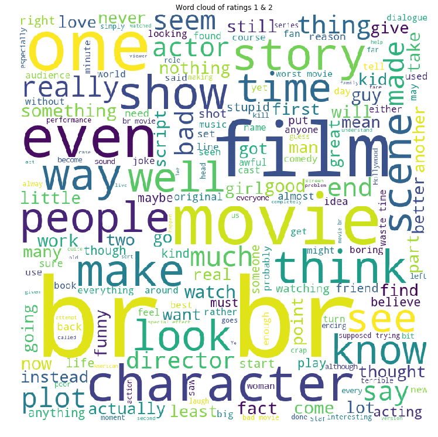
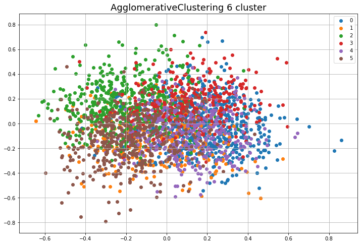
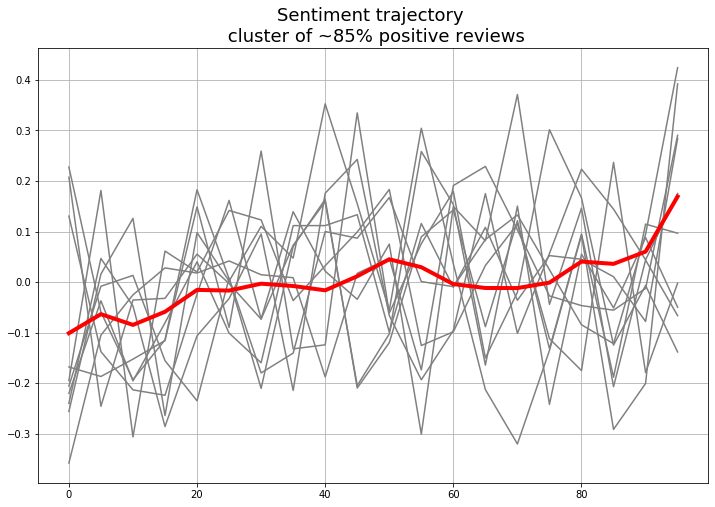
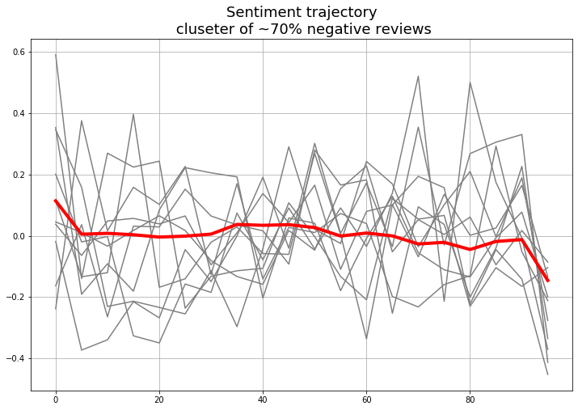

IMDB Movie Review
Information Visualization Final Project
Data Statistics
Below shows 4 animated wordclouds giving an overall view of the words that are most commonly used in reviews with different ratings.

The bar chart below shows the word percentage of negative and positive words by the word type.For this topic visualization, we apply KMeans Clustering to cluster reviews by its TF-IDF feature. Then, we find the top words of each clusters and give it a related genre.
Logstic regression feature weights
(Part of) The spliting process of one decision tree in the random forest
Classification Models
The interactive plot below shows the values of true negative, false positive, false negative, and true positive of different classifiers.The accuracy of each classifier is as follows:
- Logistic Regression: 88.6%
- Random Forest: 81.6%
- LSTM with attention: 90.6%
Sentiment Trajectory
In the part, we try to explore the sentiment trajectory in reviews.- Selecting reviews with more than 20 sentences
- Using logistic regression model to predict the positive probability of each sentence
- Interpolate probability vector to same dimension to build the sentiment trajectory vector
- Agglomerative Clustering all sentiment trajectories
- Plot the mean of clusters



